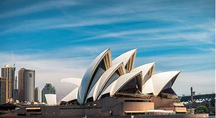
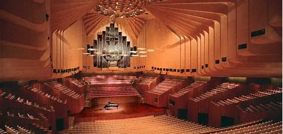

l’Opéra de Sydney existe depuis plus de 50
ans, et pourtant, il est encore aujourd’hui
fréquenté par 11 millions de visiteurs, et ce
chaque année. Au programme, dans ses
quatre salles et différents espaces, plus de
2 000 représentations d’opéras, de théâtre,
de concerts de musique contemporaine
ou encore de comédies musicales vous
attendent.
Le projet de construire l'Opéra de Sydney naît à la fin des années 1940, lorsque Eugène
Goossens, directeur du Conservatoire de musique de Nouvelle-Galles du Sud, milite
pour un lieu adapté aux grandes productions. À l'époque, la mairie de Sydney est
insuffisante. En 1954, Goossens obtient le soutien du Premier ministre Joseph Cahill,
qui lance une étude. Cahill insiste pour que le site soit à Bennelong Point, malgré son
souhait initial pour un emplacement près de la gare de Wynyard.
Le concours international d'architecture du nouvel Opéra reçoit 233 propositions. En
1957, le projet du Danois Jørn Utzon est retenu. Utzon, inconnu en dehors de son pays,
supervise la construction après sa sélection. L'ingénieur français Joe Bertony, grâce à
ses 30 000 équations, permet la construction des arches.
Croquis réalisé en 1951
|  |  |
Extérieur |
La grande salle de concert |
|
L'opéra s'organise en deux
séries de trois grands |
La plus grande fierté de l’Opéra.
Elle contient le grand orgue de |
L'entrée coûte 67 AUD $ pour les adultes et 36 AUD $ pour les enfants, avec des tarifs réduits et
familiaux de 50 AUD $ également disponibles. Il existe également une option plus longue de 2
heures, des visites quiincluent les repas et des programmes axés sur les enfants. Une
visite d'accès pour les personnes à mobilité réduite est disponible tous les jours à 12
heures et l'Opéra est sur le point de commencer d'énormes améliorations pour rendre
l'ensemble des installations plus accessible aux visiteurs ayant des limitations physiques.